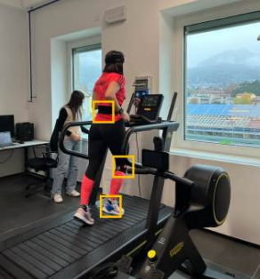

Analysis of the vibration induced by the practice of running
Semester Project – Data Analysis for Mechanical Systems

This project investigates the vibrational phenomena generated during running, focusing on how impact forces propagate through the lower limbs. Running is a repetitive high-impact activity in which ground reaction forces produce mechanical waves that travel across biological tissues, potentially influencing comfort, performance, and injury risk.
An experimental setup using wearable inertial sensors was developed to measure segmental accelerations at selected anatomical landmarks. The collected signals were processed in both time and frequency domains to identify dominant vibration frequencies, peak accelerations, and attenuation patterns along the limb.
Results showed characteristic frequency bands associated with soft tissue oscillations and a progressive reduction of vibration amplitude from distal to proximal segments, highlighting the natural damping role of muscles and biological tissues.
The project combines principles of structural dynamics and biomechanics, demonstrating how classical vibration theory can be applied to human movement analysis, with potential implications for sports engineering, injury prevention, and wearable system design.
Technical Contributions
- Algorithm Development
- Experimental validation
- Data Analysis
Technologies Used
- Python
- MATLAB
- C++